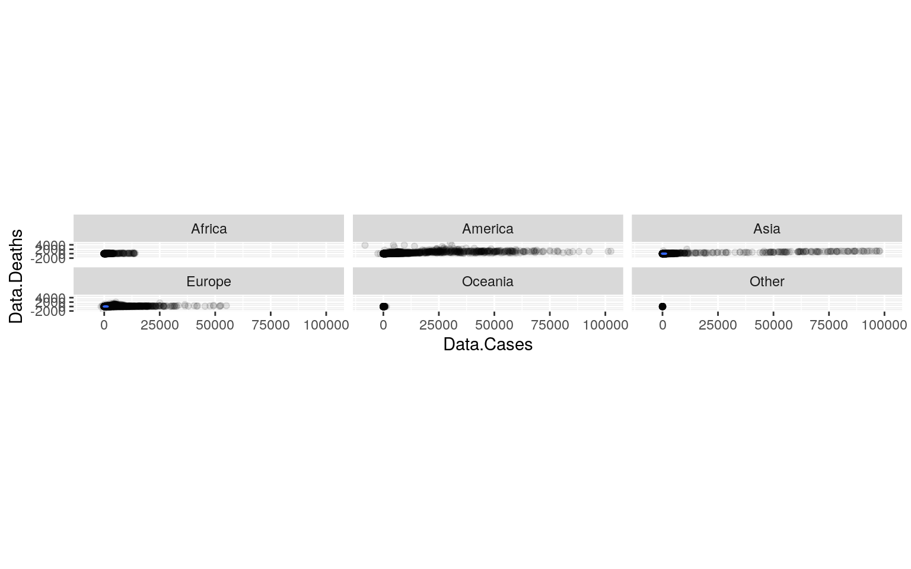
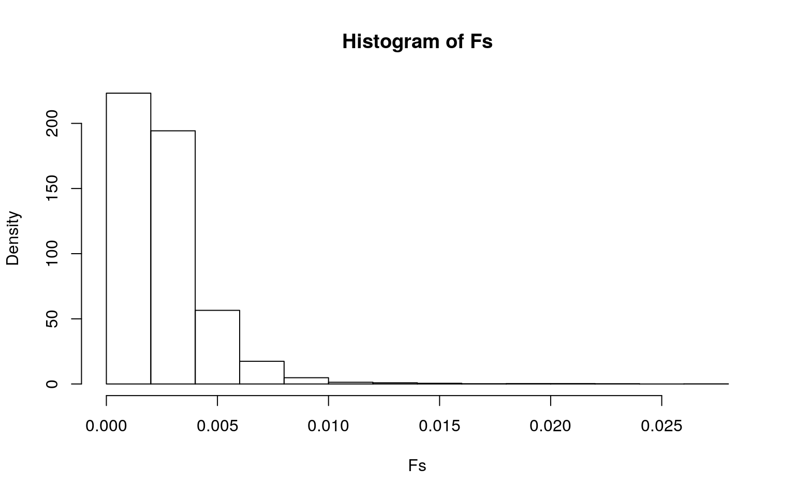
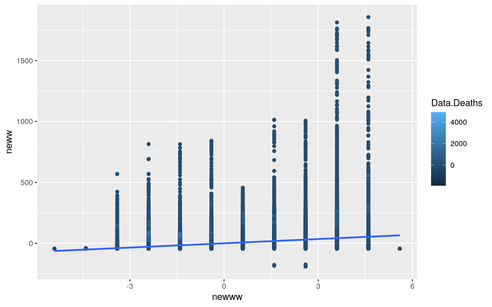
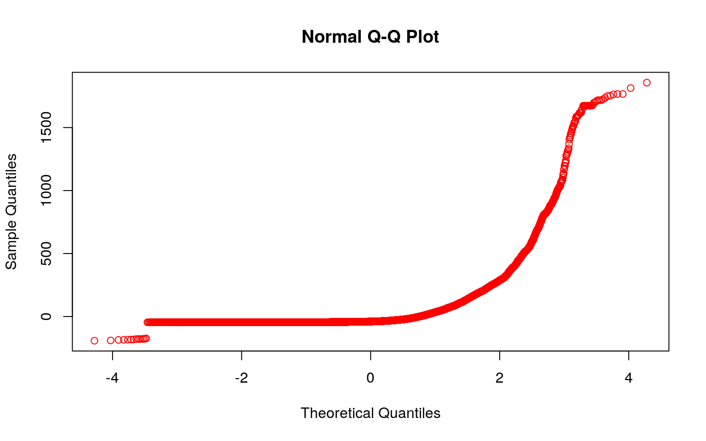
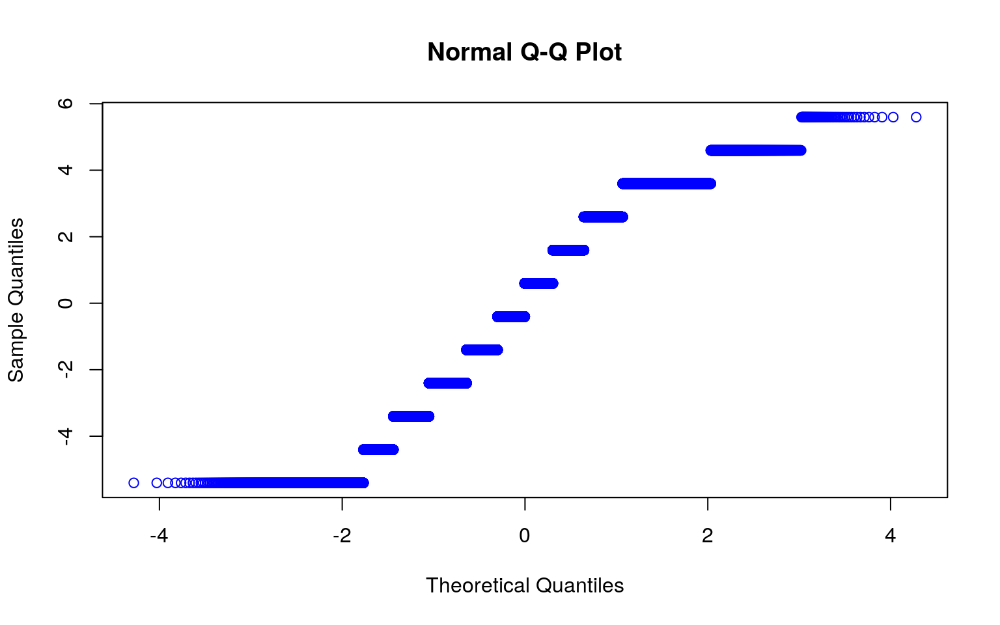
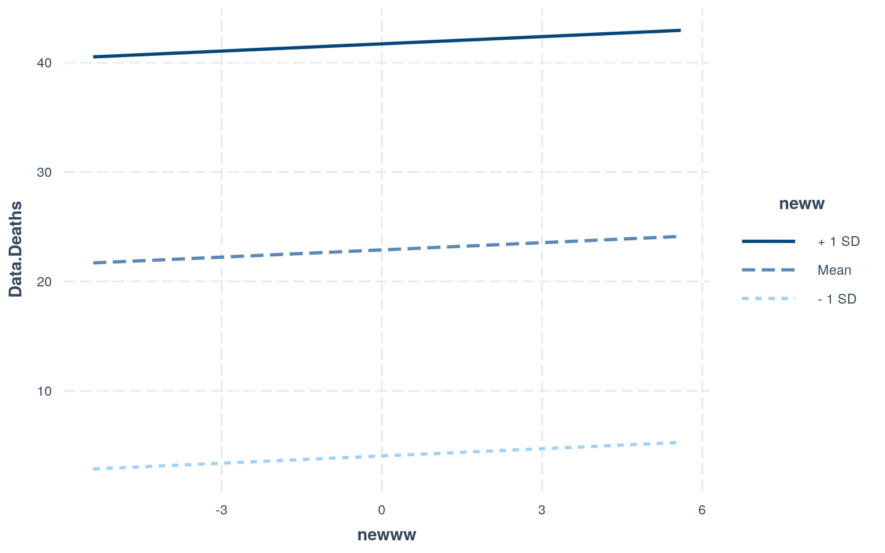
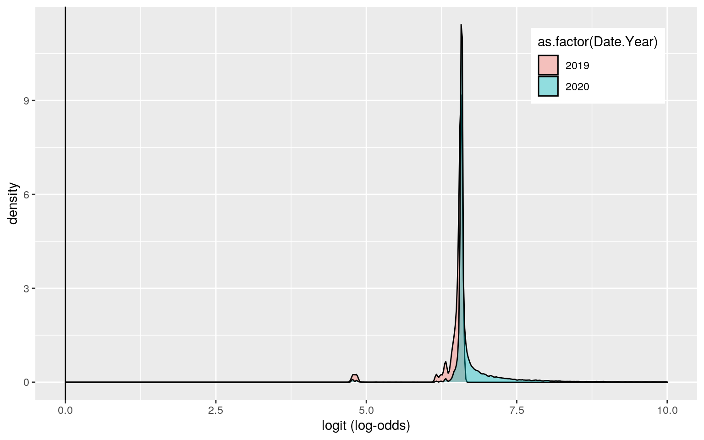
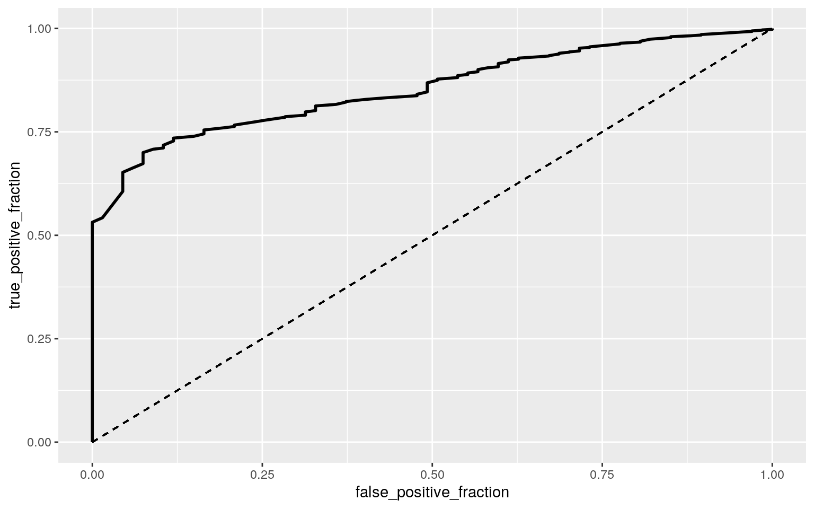

The dataset I’m going to be using is the ‘COVID-19’ dataset, in which it contains information on daily reports of COVID-19 cases and deaths in countries worldwide. This dataset is from the Official Portal for European data https://data.europa.eu/euodp/en/data/dataset/covid-19-coronavirus-data. However, I got it from Github https://corgis-edu.github.io/corgis/csv/covid/. It also has the country’s population and the number of cases per 100,000 people on a rolling 14 day average. In total, there are 10 variables and 53,590 observations in this dataset.
library(glmnet)
library(mvtnorm)
covid <- readr::read_csv("https://corgis-edu.github.io/corgis/datasets/csv/covid/covid.csv")
DATA <- covid %>% na.omit()#MANOVA
library(ggplot2)
ggplot(covid, aes(x = Data.Cases, y = Data.Deaths)) + geom_point(alpha = 0.1) +
geom_density_2d(h = 2) + coord_fixed() + facet_wrap(~Location.Continent)
MANC <- manova(cbind(Data.Cases, Data.Deaths) ~Location.Continent, data = covid)
summary(MANC)## Df Pillai approx F num Df den Df Pr(>F)
## Location.Continent 5 0.025341 137.53 10 107168 < 2.2e-16
***
## Residuals 53584
## ---
## Signif. codes: 0 '***' 0.001 '**' 0.01 '*' 0.05 '.' 0.1
' ' 1summary.aov(MANC)## Response Data.Cases :
## Df Sum Sq Mean Sq F value Pr(>F)
## Location.Continent 5 1.9729e+10 3945726185 158.77 <
2.2e-16 ***
## Residuals 53584 1.3316e+12 24851205
## ---
## Signif. codes: 0 '***' 0.001 '**' 0.01 '*' 0.05 '.' 0.1
' ' 1
##
## Response Data.Deaths :
## Df Sum Sq Mean Sq F value Pr(>F)
## Location.Continent 5 18507382 3701476 245.01 < 2.2e-16
***
## Residuals 53584 809520923 15108
## ---
## Signif. codes: 0 '***' 0.001 '**' 0.01 '*' 0.05 '.' 0.1
' ' 1covid %>% group_by(Location.Continent) %>% summarize(mean(Data.Cases), mean(Data.Deaths))## # A tibble: 6 x 3
## Location.Continent `mean(Data.Cases)`
`mean(Data.Deaths)`
## <chr> <dbl> <dbl>
## 1 Africa 142. 3.42
## 2 America 1796. 55.1
## 3 Asia 1173. 20.9
## 4 Europe 745. 18.8
## 5 Oceania 21.5 0.522
## 6 Other 10.9 0.109pairwise.t.test(covid$Data.Cases, covid$Location.Continent, p.adj = "none")##
## Pairwise comparisons using t tests with pooled SD
##
## data: covid$Data.Cases and covid$Location.Continent
##
## Africa America Asia Europe Oceania
## America < 2e-16 - - - -
## Asia < 2e-16 < 2e-16 - - -
## Europe < 2e-16 < 2e-16 3.2e-12 - -
## Oceania 0.3090 < 2e-16 < 2e-16 7.8e-10 -
## Other 0.8331 0.0043 0.0630 0.2395 0.9866
##
## P value adjustment method: nonepairwise.t.test(covid$Data.Deaths, covid$Location.Continent, p.adj = "none")##
## Pairwise comparisons using t tests with pooled SD
##
## data: covid$Data.Deaths and covid$Location.Continent
##
## Africa America Asia Europe Oceania
## America < 2e-16 - - - -
## Asia < 2e-16 < 2e-16 - - -
## Europe < 2e-16 < 2e-16 0.18089 - -
## Oceania 0.32247 < 2e-16 5.3e-12 2.8e-10 -
## Other 0.82967 0.00035 0.17802 0.22387 0.97889
##
## P value adjustment method: none# Probability of at least one type I error
1 - (0.95^27)## [1] 0.7496559# Bonferroni Correction
0.05/27## [1] 0.001851852A one-way MANOVA was conducted to determine the effect of the Location.Continent, which were Africa, America, Asia, Europe, Oceania, and other, on two dependent variables. These dependent variables were Data.Cases and Data.Deaths. Data.Cases was the number of COVID-19 cases and Data.Deaths was the number of deaths from COVID-19. According to the results from the MANOVA, there was a significant difference found between the 6 continents listed above. The Pillai trace = 0.025341, pseudo F (5,10) = 137.53, p < 0.0001. Then, univariate ANOVAs were done for each dependent variable. The univariate ANOVAs for Data.Cases and Data.Deaths were both also significant. For Data.Cases, F (5, 53584) = 158.77, p < 0.0001. For Data.Deaths, F (5, 53584) = 245.01, p < 0.0001. Next, post hoc analysis was performed conducting pairwise comparisons to find which Location.Continent differed in Data.Cases and Data.Deaths. All of the Location.Continents differed based on these two variables.
I performed 27 tests in total, 1 MANOVA, 2 ANOVAs, and 24 t tests. This is because since I had two response variables, and 6 groups (Location.Continents), there was 1 MANOVA, 2 ANOVAs, and 2*12 = 24 unique t tests. In total, it’s 27. The bonferroni significance level is α = .05/27 = 0.00185185. The probability of at least one type I error, unadjusted, is 0.7496559. Both variables were still significant after adjusting for multiple comparisons and finding the bonferroni corrected significance level.
There’s several different MANOVA assumptions, some include equal covariance between two dependent variables, no extreme univariate or multivariate outliers, linear relationship among variables, no multicollinearity, and multivariate normality. It looks like there are some outliers on the graph, so more than likely, not all assumptions were met and were likely violated. The variances and covariances are different across continents, and the distributions are almost certainly not bivariate normal.
set.seed(348)
summary(aov(Data.Deaths ~ Location.Continent, data = covid))## Df Sum Sq Mean Sq F value Pr(>F)
## Location.Continent 5 18507382 3701476 245 <2e-16 ***
## Residuals 53584 809520923 15108
## ---
## Signif. codes: 0 '***' 0.001 '**' 0.01 '*' 0.05 '.' 0.1
' ' 1obs_F <- 245 #this is the observed F-statistic
Fs <- replicate(5000, {
# do everything in curly braces 5000 times and save the
# output
new <- covid %>% mutate(Data.Deaths = sample(Data.Deaths)) #randomly permute response variable
# compute the F-statistic by hand
SSW <- new %>% group_by(Location.Continent) %>% summarize(SSW = sum((Data.Deaths -
mean(Data.Deaths))^2)) %>% summarize(sum(SSW)) %>% pull
SSB <- new %>% mutate(mean = mean(Data.Deaths)) %>% group_by(Location.Continent) %>%
mutate(groupmean = mean(Data.Deaths)) %>% summarize(SSB = sum((mean -
groupmean)^2)) %>% summarize(sum(SSB)) %>% pull
(SSB/2)/(SSW/57) #compute F statistic (num df = K-1 = 3-1, denom df = N-K = 60-3)
})
hist(Fs, prob = T)
abline(v = obs_F, col = "red", add = T)
mean(Fs > obs_F)## [1] 0The null hypothesis is that the true mean of Data.Deaths is the same for all 6 Location.Continents. The alternative hypothesis is that there is a difference in the true means of Data.Deaths for the 6 Location.Continents. I conducted an ANOVA/Fstat test. The results showed that the p-value for the mean(Fs > obs_F) was 0. This meant that none of my 5000 F stats created under the null hypothesis were greater in value than the actual F stat, which was 245. This means that we should reject the null hypothesis that the true mean of Data.Deaths is the same for all 6 Location.Continents. They do, in fact, differ.
neww <- covid$Data.Rate - mean(covid$Data.Rate)
newww <- covid$Date.Month - mean(covid$Date.Month)
fit1 <- lm(Data.Deaths ~ neww + newww, data = covid)
summary(fit1)##
## Call:
## lm(formula = Data.Deaths ~ neww + newww, data = covid)
##
## Residuals:
## Min 1Q Median 3Q Max
## -1935.9 -17.1 -15.6 -14.4 4891.6
##
## Coefficients:
## Estimate Std. Error t value Pr(>|t|)
## (Intercept) 22.881900 0.530658 43.12 <2e-16 ***
## neww 0.166493 0.004866 34.21 <2e-16 ***
## newww 0.220459 0.212017 1.04 0.298
## ---
## Signif. codes: 0 '***' 0.001 '**' 0.01 '*' 0.05 '.' 0.1
' ' 1
##
## Residual standard error: 122.8 on 53587 degrees of
freedom
## Multiple R-squared: 0.02338, Adjusted R-squared: 0.02334
## F-statistic: 641.4 on 2 and 53587 DF, p-value: < 2.2e-16ggplot(covid, aes(y = neww, x = newww, color = Data.Deaths)) + geom_point() +
geom_smooth(method = "lm", se = FALSE)
qqnorm(neww, col='red')
qqnorm(newww, col='blue')
shapiro.test(head(neww))##
## Shapiro-Wilk normality test
##
## data: head(neww)
## W = 0.76364, p-value = 0.027shapiro.test(head(newww))##
## Shapiro-Wilk normality test
##
## data: head(newww)
## W = 0.49609, p-value = 2.073e-05library(lmtest)
bptest(fit1)##
## studentized Breusch-Pagan test
##
## data: fit1
## BP = 246.29, df = 2, p-value < 2.2e-16library(lmtest)
library(sandwich)
coeftest(fit1, vcov = vcovHC(fit1))##
## t test of coefficients:
##
## Estimate Std. Error t value Pr(>|t|)
## (Intercept) 22.881900 0.530689 43.1174 <2e-16 ***
## neww 0.166493 0.008334 19.9776 <2e-16 ***
## newww 0.220459 0.182817 1.2059 0.2279
## ---
## Signif. codes: 0 '***' 0.001 '**' 0.01 '*' 0.05 '.' 0.1
' ' 1summary(fit1)$r.sq## [1] 0.02337767fitt <- lm(Data.Deaths ~ Data.Rate, data = covid)
summary(fitt)##
## Call:
## lm(formula = Data.Deaths ~ Data.Rate, data = covid)
##
## Residuals:
## Min 1Q Median 3Q Max
## -1936.2 -16.9 -15.5 -15.4 4891.0
##
## Coefficients:
## Estimate Std. Error t value Pr(>|t|)
## (Intercept) 15.427614 0.570047 27.06 <2e-16 ***
## Data.Rate 0.167848 0.004688 35.80 <2e-16 ***
## ---
## Signif. codes: 0 '***' 0.001 '**' 0.01 '*' 0.05 '.' 0.1
' ' 1
##
## Residual standard error: 122.8 on 53588 degrees of
freedom
## Multiple R-squared: 0.02336, Adjusted R-squared: 0.02334
## F-statistic: 1282 on 1 and 53588 DF, p-value: < 2.2e-16fittt <- lm(Data.Deaths ~ Date.Month, data = covid)
summary(fittt)##
## Call:
## lm(formula = Data.Deaths ~ Date.Month, data = covid)
##
## Residuals:
## Min 1Q Median 3Q Max
## -1937.8 -25.3 -19.8 -14.5 4910.3
##
## Coefficients:
## Estimate Std. Error t value Pr(>|t|)
## (Intercept) 9.0288 1.4268 6.328 2.51e-10 ***
## Date.Month 2.1635 0.2065 10.478 < 2e-16 ***
## ---
## Signif. codes: 0 '***' 0.001 '**' 0.01 '*' 0.05 '.' 0.1
' ' 1
##
## Residual standard error: 124.2 on 53588 degrees of
freedom
## Multiple R-squared: 0.002044, Adjusted R-squared:
0.002026
## F-statistic: 109.8 on 1 and 53588 DF, p-value: < 2.2e-16library(interactions)
#interaction plot
interact_plot(fit1, newww, neww) According to the results, every one increase in Data.Deaths, the number of the Data.Rate increases by 0.166493 and the number of the Date.Month increases by 0.220459. Based on the plot made we know that the linearity assumption was not met in this case. As stated above, that’s one of the assumptions. Another assumption is the normality assumption, and I created qqplots to test this assumption. Based on the graphs, neither looks like it passes the normality assumption. They’re oddly shaped. I also did Shapiro-Wilk Tests to test for normality. The null hypothesis for the test would be that the data is normally distributed. From this, I found that the p-values were both less than alpha, 0.05, meaning that we can reject the null hypothesis. Lastly, to test for the homoskedasticity assumption, I performed the Breusch-Pagan Test. This test gave me a p-value that was less than 0.05, meaning that I can reject the null hypothesis and conclude that there’s heteroskedasticity. Looking at it with the standard errors, it looked like the t-values for Data.Rate and Date.Month both decreased, however the value for the intercept actually increased.
#Bootstrapped Standard Errors
library(dplyr)
fit<-lm(Data.Deaths~Data.Rate+Date.Month,data=covid) #fit model
boot_sd <- covid[sample(nrow(covid), replace = T), ]
samp_distn <- replicate(5000, {
boot_sd <- covid[sample(nrow(covid), replace = T), ]
fit2 <- lm(Data.Deaths ~ Data.Rate + Date.Month, data = boot_sd)
coef(fit2)
})
samp_distn %>% t %>% as.data.frame %>% summarize_all(sd)## (Intercept) Data.Rate Date.Month
## 1 1.225784 0.008288571 0.1810893summary(fit)##
## Call:
## lm(formula = Data.Deaths ~ Data.Rate + Date.Month, data
= covid)
##
## Residuals:
## Min 1Q Median 3Q Max
## -1935.9 -17.1 -15.6 -14.4 4891.6
##
## Coefficients:
## Estimate Std. Error t value Pr(>|t|)
## (Intercept) 14.076171 1.419211 9.918 <2e-16 ***
## Data.Rate 0.166493 0.004866 34.213 <2e-16 ***
## Date.Month 0.220459 0.212017 1.040 0.298
## ---
## Signif. codes: 0 '***' 0.001 '**' 0.01 '*' 0.05 '.' 0.1
' ' 1
##
## Residual standard error: 122.8 on 53587 degrees of
freedom
## Multiple R-squared: 0.02338, Adjusted R-squared: 0.02334
## F-statistic: 641.4 on 2 and 53587 DF, p-value: < 2.2e-16coeftest(fit, vcov = vcovHC(fit))##
## t test of coefficients:
##
## Estimate Std. Error t value Pr(>|t|)
## (Intercept) 14.076171 1.225965 11.4817 <2e-16 ***
## Data.Rate 0.166493 0.008334 19.9776 <2e-16 ***
## Date.Month 0.220459 0.182817 1.2059 0.2279
## ---
## Signif. codes: 0 '***' 0.001 '**' 0.01 '*' 0.05 '.' 0.1
' ' 1According to the results, the SEs for the uncorrected for the intercept seems to be a bit higher than for the corrected. The SEs for the uncorrected Data.Rate seems to be a bit lower. Lastly, the SEs for the uncorrected for the Date.Month seemed to be a bit higher than for the corrected SEs. In comparing the p-values, I saw that the only p-value that was different among the two was the Date.Month p-value. Not a huge difference, though.
covid$y <- ifelse(covid$Date.Year == "2020", 1, 0)
fit2 <- glm(y ~ Data.Population + Data.Cases, data = covid, family = "binomial")
coeftest(fit2)##
## z test of coefficients:
##
## Estimate Std. Error z value Pr(>|z|)
## (Intercept) 6.5844e+00 1.2904e-01 51.0277 < 2.2e-16 ***
## Data.Population -1.2777e-09 4.1107e-10 -3.1083 0.001882
**
## Data.Cases 9.4082e-04 2.4152e-04 3.8954 9.803e-05 ***
## ---
## Signif. codes: 0 '***' 0.001 '**' 0.01 '*' 0.05 '.' 0.1
' ' 1exp(coef(fit2))## (Intercept) Data.Population Data.Cases
## 723.694219 1.000000 1.000941covid$prob <- predict(fit2, type = "response")
table(predict = as.numeric(covid$prob > 0.5), truth = covid$y) %>% addmargins()## truth
## predict 0 1 Sum
## 0 0 1 1
## 1 67 53522 53589
## Sum 67 53523 53590# TPR
53522/53523 ## [1] 0.9999813# PPV
53522/53589## [1] 0.9987497# TNR
0/67## [1] 0class_diag <- function(probs, truth) {
# CONFUSION MATRIX: CALCULATE ACCURACY, TPR, TNR, PPV
if (is.character(truth) == TRUE)
truth <- as.factor(truth)
if (is.numeric(truth) == FALSE & is.logical(truth) == FALSE)
truth <- as.numeric(truth) - 1
tab <- table(factor(probs > 0.5, levels = c("FALSE", "TRUE")),
factor(truth, levels = c(0, 1)))
acc = sum(diag(tab))/sum(tab)
sens = tab[2, 2]/colSums(tab)[2]
spec = tab[1, 1]/colSums(tab)[1]
ppv = tab[2, 2]/rowSums(tab)[2]
f1 = 2 * (sens * ppv)/(sens + ppv)
# CALCULATE EXACT AUC
ord <- order(probs, decreasing = TRUE)
probs <- probs[ord]
truth <- truth[ord]
TPR = cumsum(truth)/max(1, sum(truth))
FPR = cumsum(!truth)/max(1, sum(!truth))
dup <- c(probs[-1] >= probs[-length(probs)], FALSE)
TPR <- c(0, TPR[!dup], 1)
FPR <- c(0, FPR[!dup], 1)
n <- length(TPR)
auc <- sum(((TPR[-1] + TPR[-n])/2) * (FPR[-1] - FPR[-n]))
data.frame(acc, sens, spec, ppv, f1, auc)
}
probss <- predict(fit2, type = "response")
class_diag(probss, covid$y)## acc sens spec ppv f1 auc
## 1 0.9987311 0.9999813 0 0.9987497 0.9993652 0.8540222covid$logit <- predict(fit2, type = "link")
covid %>% ggplot() + geom_density(aes(logit, fill = as.factor(Date.Year)), alpha = 0.4) + theme(legend.position = c(0.85, 0.85)) + geom_vline(xintercept = 0) + xlab("logit (log-odds)") + xlim(0, 10)
library(plotROC)
# ROCCurve
ROCplot <- ggplot(covid) + geom_roc(aes(d = y, m = prob),
n.cuts = 0) + geom_segment(aes(x = 0, xend = 1, y = 0, yend = 1),
lty = 2)
ROCplot
calc_auc(ROCplot)## PANEL group AUC
## 1 1 -1 0.854495According to the results, the logistic regression model showed that the odds of year 2020 when Data.Population and Data.Cases both equal 0 is 723.694. For every additional unit increase in Data.Population, while controlling for the year and Data.Cases, the odds of it being the year 2020 increases by about 1. Now, when controlling for Data.Population, the odds of it being the year 2020 increases by about 1.000941. The specificity was 0, the sensitivity was ~0.99, and the precision was ~0.99. The accuracy was ~0.99 as well. The AUC came out to be 0.85, which isn’t bad. From the ROC plot, the AUC calculated was ~0.85, meaning that the model was not so bad.
#Log regression with more variables
newcovid <- covid%>%mutate(y = ifelse(Date.Year == "2020", 1, 0))
newcovid2 <- newcovid %>% select(-Date.Day, -Location.Country, -Location.Code, -prob, -logit)
log_reg_all <- glm(y~., data=newcovid2, family = "binomial")
prob2 <- predict(log_reg_all)
coeftest(log_reg_all)##
## z test of coefficients:
##
## Estimate Std. Error z value Pr(>|z|)
## (Intercept) -1.0730e+05 8.8356e+07 -0.0012 0.999
## Date.Month 2.2488e-08 6.3140e+02 0.0000 1.000
## Date.Year 5.3132e+01 4.3740e+04 0.0012 0.999
## Data.Cases -9.7591e-13 4.7166e-01 0.0000 1.000
## Data.Deaths 6.2465e-11 1.8175e+01 0.0000 1.000
## Data.Population 4.8518e-17 1.1198e-05 0.0000 1.000
## Location.ContinentAmerica 3.2391e-08 4.6290e+03 0.0000
1.000
## Location.ContinentAsia -5.7948e-08 4.6860e+03 0.0000
1.000
## Location.ContinentEurope 3.4311e-08 4.4145e+03 0.0000
1.000
## Location.ContinentOceania 2.0375e-08 8.5067e+03 0.0000
1.000
## Location.ContinentOther 3.0365e-07 4.4751e+04 0.0000
1.000
## Data.Rate -2.6122e-10 1.4784e+01 0.0000 1.000exp(coef(log_reg_all))## (Intercept) Date.Month Date.Year
## 0.000000e+00 1.000000e+00 1.188481e+23
## Data.Cases Data.Deaths Data.Population
## 1.000000e+00 1.000000e+00 1.000000e+00
## Location.ContinentAmerica Location.ContinentAsia
Location.ContinentEurope
## 1.000000e+00 9.999999e-01 1.000000e+00
## Location.ContinentOceania Location.ContinentOther
Data.Rate
## 1.000000e+00 1.000000e+00 1.000000e+00class_diag <- function(probs, truth) {
# CONFUSION MATRIX: CALCULATE ACCURACY, TPR, TNR, PPV
if (is.character(truth) == TRUE)
truth <- as.factor(truth)
if (is.numeric(truth) == FALSE & is.logical(truth) == FALSE)
truth <- as.numeric(truth) - 1
tab <- table(factor(probs > 0.5, levels = c("FALSE", "TRUE")),
factor(truth, levels = c(0, 1)))
acc = sum(diag(tab))/sum(tab)
sens = tab[2, 2]/colSums(tab)[2]
spec = tab[1, 1]/colSums(tab)[1]
ppv = tab[2, 2]/rowSums(tab)[2]
f1 = 2 * (sens * ppv)/(sens + ppv)
# CALCULATE EXACT AUC
ord <- order(probs, decreasing = TRUE)
probs <- probs[ord]
truth <- truth[ord]
TPR = cumsum(truth)/max(1, sum(truth))
FPR = cumsum(!truth)/max(1, sum(!truth))
dup <- c(probs[-1] >= probs[-length(probs)], FALSE)
TPR <- c(0, TPR[!dup], 1)
FPR <- c(0, FPR[!dup], 1)
n <- length(TPR)
auc <- sum(((TPR[-1] + TPR[-n])/2) * (FPR[-1] - FPR[-n]))
data.frame(acc, sens, spec, ppv, f1, auc)
}
truth = newcovid2$y
class_diag(prob2, truth)## acc sens spec ppv f1 auc
## 1 1 1 1 1 1 1table(prediction=as.numeric(prob2>.5), truth) %>% addmargins()## truth
## prediction 0 1 Sum
## 0 67 0 67
## 1 0 53523 53523
## Sum 67 53523 53590#10 fold
set.seed(1234)
k = 10
CV <- newcovid2[sample(nrow(newcovid2)),]
folds<- cut(seq(1:nrow(newcovid2)), breaks=k,labels=F)
diags <- NULL
for (i in 1:k) {
train <- CV[folds != i, ] #create training set (all but fold i)
test <- CV[folds == i, ] #create test set (just fold i)
truth1 <- test$y #save truth labels from fold i
fitCV <- glm(y ~., data = train,
family = "binomial")
probsCV <- predict(fitCV, newdata = test, type = "response")
diags <- rbind(diags, class_diag(probsCV, truth1))
}
diags %>% summarize_all(mean)## acc sens spec ppv f1 auc
## 1 1 1 1 1 1 1#LASSO
library(glmnet)
set.seed(1234)
y<-as.matrix(newcovid2$Date.Year)
newcovid2 <- newcovid %>% select(-Date.Day, -Location.Country, -Location.Code, -prob, -logit)
x <- model.matrix(Date.Year~.,data=newcovid2)[,-1]
head(x)## Date.Month Data.Cases Data.Deaths Data.Population
Location.ContinentAmerica
## 1 11 121 6 38041757 0
## 2 11 86 4 38041757 0
## 3 11 95 3 38041757 0
## 4 11 132 5 38041757 0
## 5 11 76 0 38041757 0
## 6 10 157 4 38041757 0
## Location.ContinentAsia Location.ContinentEurope
Location.ContinentOceania Location.ContinentOther
## 1 1 0 0 0
## 2 1 0 0 0
## 3 1 0 0 0
## 4 1 0 0 0
## 5 1 0 0 0
## 6 1 0 0 0
## Data.Rate y
## 1 3.745884 1
## 2 3.782685 1
## 3 3.787943 1
## 4 3.766913 1
## 5 3.575019 1
## 6 3.553989 1x<-scale(x)
cv <- cv.glmnet(x,y, family = "binomial")
lasso<-glmnet(x,y,family="binomial",lambda=cv$lambda.1se)
coef(lasso)## 12 x 1 sparse Matrix of class "dgCMatrix"
## s0
## (Intercept) 6.683174
## Date.Month 0.000000
## Data.Cases .
## Data.Deaths .
## Data.Population .
## Location.ContinentAmerica .
## Location.ContinentAsia .
## Location.ContinentEurope .
## Location.ContinentOceania .
## Location.ContinentOther .
## Data.Rate .
## y .#10 fold cv
#set.seed(1234)
#k = 10
#NEW<-newcovid2 %>% sample_frac
#folds <- ntile(1:nrow(NEW), n=10)
#diags <- NULL
#for (i in 1:k) {
#train <- NEW[folds != i, ] #create training set (all but fold i)
#test <- NEW[folds == i, ] #create test set (just fold i)
#truth2 <- test$Date.Year #save truth labels from fold i
#fit10 <- glm(Date.Year ~ Date.Month, data = train,
#family = "binomial")
#probs10 <- predict(fit10, newdata = test, type = "response")
#diags <- rbind(diags, class_diag(probs10, truth2))
#}
#diags %>% summarize_all(mean)According to the results, the logistic regression using the binary variable got acc of 1, sensitivity value of 1, specificity of 1, and PPV of 1. The 10 fold CV models were the same. The one variable that was retained was Date.Month.